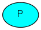
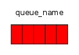
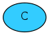
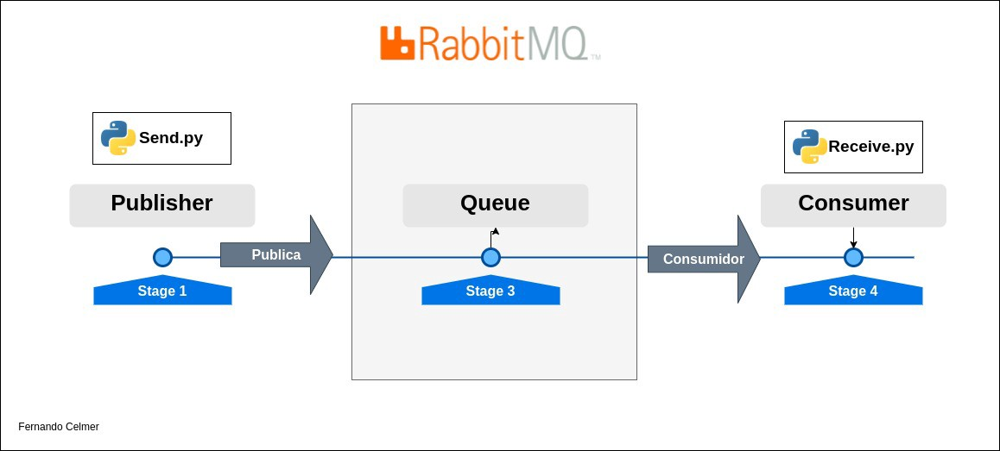

Introducao ao rabbitmq python
01 DE MARÇO, 2022 [#02]
Introdução
Este é um pequeno review sobre a ferramente de mensageria RabbitMQ.
Para entender melhor sobre RabbitMQ primeiro é necessário entender o conceito de mensageria que é basicamente um modo de comunicação por meio de troca de mensagens e sendo gerenciados por um “Message Broker”, termo em inglês que define um software que possibilita que aplicativos, sistemas e serviços se comuniquem e troquem informações.
RabbitMQ
Na documentação oficial do RabbitMQ tem um exemplo muito bom do conceito da ferramenta em si que seria um mediador/gerenciador de mensagens, simples assim. Pense no sistema sendo sendo como uma agência de correios. Quando você coloca uma correspondência em uma caixa postal, pode ter certeza de que o carteiro acabará entregando a correspondência ao seu destinatário. Nessa simples analogia o RabbitMQ é uma caixa postal e também a agência de correios que entregará a sua carta.
“Producing” / Produzir

IMAGEM-01 — [Producing] — Produzir
Produzing termo que representa o envio de uma mensagem para que o software. Nesse nesse cenário poderíamos chamar esse software de produtor.
“Queues” / Fila

IMAGEM-02 — [Queues] — Filas
São nas Queues ou Filas que ficam armazenadas as mensagens enviadas pelo software “produtor”. Agora estamos falando do que é executado dentro do servidor RabbitMQ que pode limitar-se pela sua memória e tamanho em disco disponibilizado pelo host.
“Exchanges” / Trocas
Exchanges ou Trocas é o processo de distribuição das mensagens para as suas respectivas filas. O direcionamento das mensagens depende do algoritmo de roteamento usado que é especificado nas mensagens recebidas.
“Consumers” / Consumidores

IMAGEM-03 — [Consumers] — Consumidores
Consumers são uma parte importante do esquema geral da estrutura do RabbitMQ, porque são eles, os “Consumidores” que irão executar determinados processos. É nesse momento que o processo descrito na mensagem é consumido e processado.
Fluxo Básico

IMAGEM-04 — Diagrama simplificado do fluxo do RabbitMQ
Exemplo em Python
Send.py
# coding=utf-8
import pika
import environ
env = environ.Env()
environ.Env.read_env()
rabbitmq_url = env("RABBITMQ_URL")
params = pika.URLParameters(rabbitmq_url)
connection = pika.BlockingConnection(params)
channel = connection.channel()
channel.queue_declare(queue='intro_rabbitmq')
channel.basic_publish(exchange='', routing_key='intro_rabbitmq', body='Ola Mundo!')
print(" [x] Enviado 'Ola Mundo!'")
connection.close()
Receive.py
# coding=utf-8
import pika, sys, os
import environ
def main():
env = environ.Env()
environ.Env.read_env()
rabbitmq_url = env("RABBITMQ_URL")
params = pika.URLParameters(rabbitmq_url)
connection = pika.BlockingConnection(params)
channel = connection.channel()
channel.queue_declare(queue='intro_rabbitmq')
def callback(ch, method, properties, body):
print(" [x] Recebido %r" % body)
channel.basic_consume(queue='intro_rabbitmq', on_message_callback=callback, auto_ack=True)
print(' [*] Esperando mensagem. Aperte CTRL+C para sair')
channel.start_consuming()
if name == 'main':
try:
main()
except KeyboardInterrupt:
print('Interrompido')
try:
sys.exit(0)
except SystemExit:
os._exit(0)
A maior parte deste conteúdo foi retirado do site oficial do RabbitMQ, para ter acesso a tópicos mais complexos acesse www.rabbitmq.com.
Mais informações